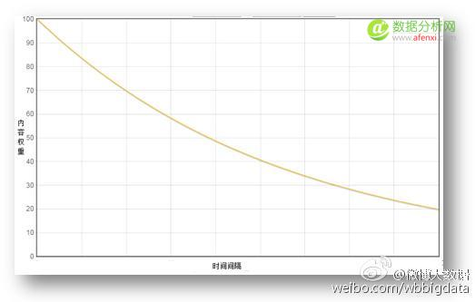

微博作为最大的中文社交媒体，拥有数以“PB”(1024 TB)计的用户信息，从海量的用户信息中发掘每个用户的社交特性、潜在能力及兴趣等信息，是微博为用户提供更加人性化服务的基础。微博大数据经过近两年不断地调整、磨合、优化，针对社交媒体特性，研发构建了一整套完整的用户画像体系。该体系涵盖能力标签、兴趣标签、关系及亲密度、信用质量和自然属性五大部分，完整而全面地实现了用户信息标签化。同时，大数据的用户画像体系已应用于微博众多的业务场景中，并随着微博业务的发展不断完善升级，将“大数据”概念落地落实。
为了方便与大家交流探讨，大数据用户团队特别整理了用户画像系列文章，主要从微博的角度出发，重点介绍社交媒体平台中用户的特性，微博业务发展中用户的建模刚需，以及不同纬度建模过程中遇到的问题和解决方案。
引言
在以微博为代表的社交媒体平台中，每一个用户都是网络中的一个具备发布、传播、消费信息功能的节点。其中一部分节点具备发布优质原创信息的功能，并通过社交网络将信息快速传播，即能力节点;而其他大部分节点则偏重于消费信息，同时传播其感兴趣的信息，即消费节点。微博平台的这种信息传播方式使得能力节点从原创信息传播中获得对网络的影响力，并打造自身的品牌，从而进一步促使更多节点消费其原创信息;而这信息传播方式也让消费节点在消费信息的同时发掘其自身兴趣，促进其对同类信息的消费，从而提升能力节点的活跃性。因此，促进优质信息的快速传播是我们的首要任务，而挖掘出具备原创信息发布能力的节点，并为其打上相应的能力标签是后续工作的前提和基础。
本文主要从用户标签体系、能力标签的应用场景、能力标签挖掘框架、关键技术点四个方面对用户能力标签的整体挖掘框架和挖掘算法进行介绍。
一、用户标签体系：
微博作为最大的中文社交媒体，每天都有丰富的信息在其上发布与传播，从某个话题下的相关信息中聚合出一个或者多个具有代表性的词语作为标签，能够方便对用户与内容的查找与分析。因此，对于在微博上能够聚合出的数量庞大的标签库而言，为了有效的梳理标签，方便挖掘工作的进行，需要构建一个清晰完整的用户标签体系。图1是目前已经构建的三层标签体系，其左半部分叙述了三个层级标签的数量，右半部分则对标签层级进行举例说明。
如图1左半部分所述，在当前的三层用户标签体系中，共存在50多个一级标签，1000多个二级标签和近30万的三级标签;其中一级标签是大类标签，类似于新闻客户端中常见的频道(如右半部分的财经、互联网等)，二级标签是从属于一级标签的细分(如右半部分中财经下的股票，互联网下的互联网安全等)，三级标签是对二级标签的进一步细分，能对应到一级标签下的实体对象(如财经下某一支具体的股票，互联网下的某一家具体公司等)。
在所确定的标签体系下，我们需要对每一个粒度的标签聚合信息，具体到用户能力标签，就是要在每个标签下聚合具有该细分标签能力的用户群体。
二、能力标签的应用场景
目前能力标签已经应用于微博众多业务场景中，其中两个典型的业务场景是“微博找人”和“热门微博”，分别如图2和图3所示。
在找人业务场景中，用户可以直接发现各垂直领域的专家账号，通过关注专家账号可以直接获取各垂直领域的优质内容。在热门微博业务场景中，内容流都出自于垂直领域的专家账号：一个账号通过发布某个领域的优质内容形成初步影响力，大数据计算出其所属领域后，热门微博会在对应领域进行内容推荐，使该账户逐步成长为专家账号，从而形成一个产品闭环。能力标签的主要作用是构建各种优质语料的重要基础数据源，通过能力标签圈定专家用户群体，提取出优质语料等相关信息;在大部分情况下，能力标签不直接在业务场景中展示。
三、能力标签挖掘框架
能力标签挖掘，即对用户标签体系中的能力标签进行挖掘。具体的，在整体用户能力标签挖掘流程中，首先通过用户关系数据(主要是分组，用于体现粉丝对于用户能力的认可度)、用户内容数据(主要是原创博文，用于体现用户自身的专业能力)、用户行为数据(主要是转、评、赞等互动信息，用于体现该用户在相关领域内的影响力)挖掘出用户的能力标签及其基础权重;其次通过引入用户的自填信息、认证信息作为能力标签权重的调权因子参与计算;接下来通过多个维度的定向挖掘系统和运营反馈系统进行能力标签的校正和增加能力标签的覆盖。最后，将挖掘出来的用户能力标签及权重输出至用户能力标签库，供上层业务调用。整体的挖掘框架如图4所示：
四、能力标签挖掘关键技术点
本节主要介绍能力标签挖掘中涉及到的标签词汇聚、用户影响力、时间窗口和时间衰减三个关键技术点。
标签词汇聚
用户的分组信息即用户为关注对象打上的标签作为用户关系数据引入到挖掘过程中，由于标签属于UGC，就会造成同一个标签主题有多种不同的表达方式，将多种不同的表达方式聚合起来，形成一个标签集，并且映射到我们的标签体系中，可以有效地提升能力标签的准确率和覆盖率。
首先将分组信息通过分类模型划分为强关系型(同学、同事等)和兴趣型(互联网、财经等)两类，并将兴趣型分组信息作为我们的基础预料。
接下来通过聚类、关联等相关算法进行标签词(分组信息)的聚合;
最后将聚合的标签集根据相关程度等因子划分为高相关和低相关两类。
以互联网标签为例，聚合出来的最终结果如表1所示：
用户影响力
用户影响力指的是用户在某个特定标签下的影响力，因此影响力计算的边界(如图5所示)是标签对应的兴趣用户群体(包含该标签的能力用户)，即对该标签所对应的领域有一定了解的用户群体。具体地，我们将其它用户对某个用户原创博文的转、评、赞等互动行为作为基础数据，利用pagerank迭代算法进行该用户影响力的计算。

其中，同领域用户的影响力大小是由其它用户对相关博文的转、评、赞等互动行为按照一定的权重比计算得到的。所谓相关博文就是指用户发表的属于标签对应领域的原创博文(即打上内容标签的原创博文，该部分属于大数据内容团队负责，后续会有相关文章介绍)。
时间窗口和时间衰减
考虑到原创博文的消费价值和计算代价，对于用户内容数据，我们选取了用户近一段时期内的原创博文作为基础语料进行计算。
关于时间衰减，我们结合牛顿冷却定律和微博的业务需求推导出相应的衰减公式，并通过衰减效果的对比，确定了相关衰减参数的数值，最终得出了用户能力标签内容权重的时间衰减函数，如图6所示。

图6：用户能力标签内容权重衰减函数
五、小结
当前我们主要从社交关系、原创内容、影响力三个维度来识别用户的能力标签以及计算相应的权重，同时通过用户的自填信息、认证信息等其他信息进行调权。对于某些特定的垂直领域或某类具有明显特征的用户群体，我们通过定向挖掘系统来进行处理，然后融合到最终的用户能力标签库进行输出。
相对于用户能力标签，用户兴趣标签涉及到的上层业务更加广泛，依赖的数据也更加复杂多变，在下一篇用户画像系列文章中，我们将会详细介绍用户兴趣标签的挖掘流程。
注：数据分析网遵循行业规范，任何转载的稿件都会明确标注作者和来源，若标注有误或遗漏，请联系主编邮箱：afenxi@afenxi.com